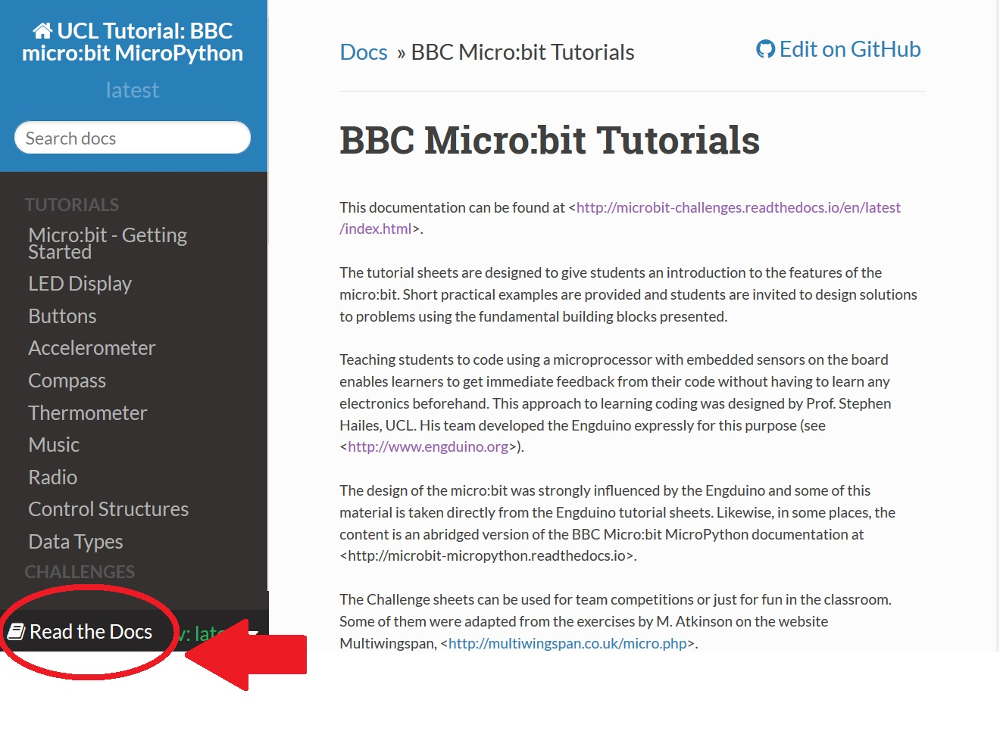

Micro:bit Python¶
Diese Dokumentation kann unter <http://microbit-challenges-de.readthedocs.io/en/latest/index.html> angesehen werden.
Die Arbeitsblätter sind so gestaltet, dass sie den Schülern eine Einführung in die Funktionen des micro:bit vermitteln sollen. Es werden kurze praktische Beispiele gegeben und die Schüler werden aufgefordert, mit Hilfe der vorgestellten Grundbausteine Lösungen für Aufgaben.
Schülern das Programmieren mit einem Mikroprozessor mit eingebetteten Sensoren auf dem Board beizubringen ermöglicht es den Lernenden, sofortiges Feedback zu ihrem Code zu erhalten, ohne dass sie vorher etwas über Elektronik lernen müssen. Dieser Ansatz zum Erlernen von Coding wurde von Prof. Stephen Hailes, UCL, entworfen. Sein Team entwickelte den Engduino ausdrücklich für diesen Zweck. Das Design des micro:bit wurde stark durch den Engduino und ein Teil dieses Materials ist direkt aus den Engduino-Tutorialblättern übernommen. Ebenso ist der Inhalt an einigen Stellen eine gekürzte Version der BBC Micro:bit MicroPython Dokumentation.
Die Challenge-Aufgaben können für Team-Wettbewerbe oder einfach zum Spaß im Klassenzimmer verwendet werden. Einige von ihnen wurden auf Grundlage der Übungen von M. Atkinson auf der Website Multiwingspan angepasst.
Um diese Dokumentation im pdf-, epub- oder html-Format herunterzuladen, klicke auf den Link unten in der Seitenleiste auf der linken Seite:
Wenn du zu dieser Sammlung beitragen möchtest, nur zu! Installiere git und erstelle einen Branch. Es wäre toll, mehr Challenges und weitere Projekte zu haben.
Getting Started
Micro:bit Features
Basics of programming
Challenges